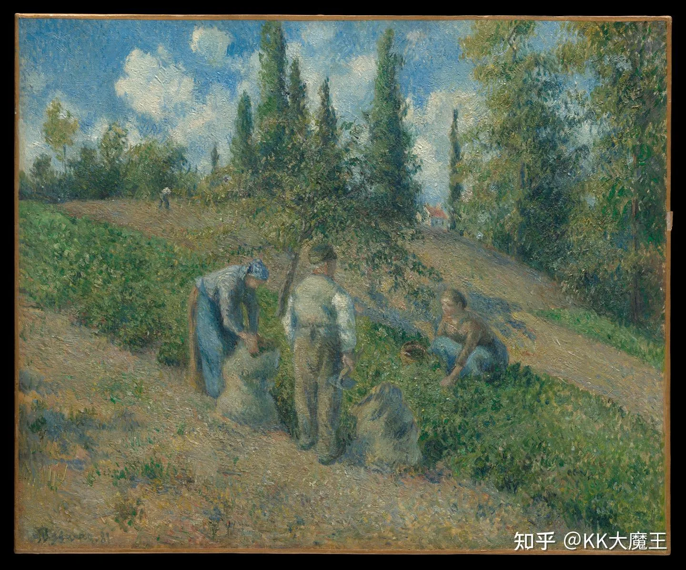

大家好，我是KK。上一篇跟大家聊了在大厂干了一年半后的一些过程和体悟。这一篇给大家讲讲这三个月从大厂离职之后的经历。
第一节离职
我是在 6 月底从大厂离职，开始和我之前在部门里合作的产品同学以及他的一个朋友，我们三个人筹备创业。
我们刚开始是非典型的创业，是三无创业（无融资、无idea、无团队-除了我们三)。
出来的原因，说到底就是在厂里面待得不舒服了。日常工作中大部分时间都在做协调、汇报和管理职责。在当下这样一个快速变化的阶段，深入到一线去，保持对一线技术的敏感和深度学习，我们判断更有价值。
于是毅然决然的出走。
决定走的那一天，我和leader one one(大厂黑话，意思是你和leader两个人的单独会议，一般用于聊一些敏感话题，注意关闭飞书录音)，我们非常平和的聊完了这个事情，他希望我能坚持走下去。
随后我和合伙人两个人，在楼下边走边聊，深圳入夏很早，空气潮湿又闷热，我们一圈一圈的走，烟一根一根的抽。我们是困惑的，也是乐观的，但我们相信，前路是曲折的，也是光明的。
第二节崎岖的开始
我个人并不是喜欢“创业”这个词，它被赋予了太多的想象和意义，好像是一段勇敢的冒险。但说白了，不管任何类型的创业，本质是在做生意。做生意核心的第一要点是找到需求，找到买家。
做产品简单，找到需求难。产品只是满足需求的手段，本质上对需求的把握和敏感度才是最重要的。你可以做十个产品来满足同一个需求。
我们目前发现，实际上赚钱的AI需求（合法的）：
- 渠道生意，比如现在非常火的中转站。
- 生产端生意，比如模型厂商，本质上是通过 GPU、电力以及模型权重等原料，凭空生产出模型 token 这样的资源或产品，再由中转站作为渠道商去做分发。
我们在创业过程中，遇到的最大的问题，就是没有实际找到一个需求，没有找到切实有人愿意为之掏钱的需求，尤其是在国内的场景下。
但我们还是拿着一个并不成熟的想法，踏上了融资的道路。
第三节一级市场的逻辑
一级市场也可以通过买卖逻辑来分析。
创业者和创业项目是商品，是卖方；而资本（或者说 VC）则是买方。同时由 FA（也就是 Financial Advisor，财务顾问）来帮忙，在中间充当渠道的作用，通过自身的渠道网络供给不同的买家。
这个过程中我们接触了一些 FA 和投资机构。我们的融资轮次非常早期，也就是天使轮。天使轮我们要求的融资金额从去年的角度来说其实不算多，大概想融 100 到 150 万美金左右，但融资过程并不顺利。
一级市场在判断一个非常早期的项目时，需要价值锚定。由于产品/商业模式处于极早期且变动可能很大，初创团队在组织能力也比大厂更弱。因此，投资机构大部分情况下只能由团队本身(人)来定价。他们锚定团队成员价值的点主要来自这几个方面：
- 这个人在历史上、市场上做出过什么：
- 如果在大公司做过，看职级是什么样，有一些机构特别偏好大厂的高P。
- 如果之前创过业，看创业的成果是什么样。
- 如果没创过业，看在社区里有没有做出过有影响力的工作，比如有没有比较 popular 的论文，或者特别 popular 的 GitHub 项目等。
同时还会受到市场环境因素的影响。所谓的市场因素，是指一级市场对于某一个 topic 下的项目是否存在兴趣，这跟二级市场炒股其实是一样的。
例如，去年 AI Agent 刚爆发的时候，市场上对于 AI 应用的乐观程度比较高。当时没有类似的项目出现，这属于一种新商品的供给，所以市场会给这些项目比较高的定价；加上它们本身稀缺，也完全不缺买方。
但经历过一整年之后，随着这些商品的质地浮现出来，大家发现应用本身其实就是模型的另一种渠道。渠道的利润很大程度上来自于拿货价格与终端售价之间的差值，也就是终端售价减去拿货价格。
在这种情况下，大家会发现这个生意其实没那么性感。供货方的价格一直在涨，应用作为渠道的利润想象空间就很小，能跑出来的非常有限，可能只有少数具备高溢价品牌效应的产品才会有进一步发展的机会。
所以今年 6 月底我们出来拿钱的时候就遇到了这个问题：市场上愿意为AI应用出手投资的机构非常少。
而今年上半年比较火的方向，是比如世界模型、具身智能，包括一些 AI 硬件。硬件是一个比较确定的事情，东西好用、有人用，就能卖出货拿到回款，营收模式直接，而且不仅仅是模型的一个渠道商。

第四节快即是慢
从这个角度来说，我们今年出师非常凶险，环境很差。在经历了一段时间的挫折之后，我们对重心做了一些调整：先把东西做出来。我们也评估过，做这些事情投入的成本并不多，在量没有上来之前，主要就是一些服务器成本以及开发调用的 token 成本，每个月大概也就大几千块钱的量级。
回到创业公司本身，一个小团队在快速迭代和奔跑的过程中，同样会遇到一些问题。
首先，由于 coding agent 等技术的发展，我们实现一个想法的速度变得极快。尤其是当你的知识面比较广时，给出的 prompt 就会更精准，你能非常明确地知道需要什么东西来实现自己的想法。
我们大概是在做一个 agent 运行时的托管平台。在实现过程中，会有大量的 agent 运行在我们的云端，这本质上需要搭建一个类似 claude managed Agent 的服务架构。
如果对云原生比较了解，就会知道可以用 Kubernetes 来做托管，并通过类似于大厂中台的模式提供一系列 SDK，帮助这些托管的 agent 完成支付、存储、监控等一系列工作。本质上做的就是一个运行时的中台。
飞奔当然是好事，但一个团队不可能一直在做百米赛跑。飞奔完成之后，就必须面对 agent 留下的技术债。尤其是在方向从不确定到收敛的过程中，我们尝试了一些探索，内部积累了大量的“熵”，必须停下来去治理，这项工作非常重要。
但治理工作会显著消耗人的注意力，它跟用 agent 快速奔跑完全不同。在实际上线之前，为了保证不出大问题，必须对整个系统做 review，这是一个不得不慢下来的过程。
我也在思考有没有加速的方式，但目前还没有找到。这个问题的本质是要消除人对整个系统的未知。在现有的编程工具下，似乎没有更好的方式去降低这种成本。未来在 AI Agent 时代可能会出现更友好的编程语言/工具，但至少目前，我们还没有办法规避。
第五节财务回报
创业初期的财务回报几乎为零。如果在大厂或中厂上班，拿钱是件相对确定的事：只要每天正常出勤就会有报酬。虽然工作体验可能让人难受，做的也未必是自己想做的事，但从财务角度看回报是充分的。而在创业中（至少对我们目前做的 AI 应用来说），在真正找到需求并切实满足好它之前，基本谈不上什么经济回报。
即便拿了投资人的钱，虽然合规上允许给自己发工资，但也绝不可能发很多，否则财务尽调根本过不去，这也符合常识。
所以，如果你的经济问题还没解决、手头仍有财务风险，或者抗风险能力较弱、不太能接受较低的收入下限，我并不建议轻易出来创业，这绝不是一个好选择。
但如果你觉得最重要的是经历本身，或者单纯不是为了短期经济回报，那确实可以出来试一试。不过事情永远不会那么简单，最核心的依然是：找到并满足那些 ROI 为正的需求。
在最后的最后，我想跟大家分享一下：为什么要放弃优渥的大厂环境和大厂工作，一定要出来？本质上，我们所有的时间、所做的事情，都是在向这个世界表达自我。柴米油盐是重要的，但同时自由地向这个世界表达自我、让这个世界变得更好一点点，也同样重要。
这就是我过去三个月经历下来的一些想法，希望这期的内容对你有所帮助。